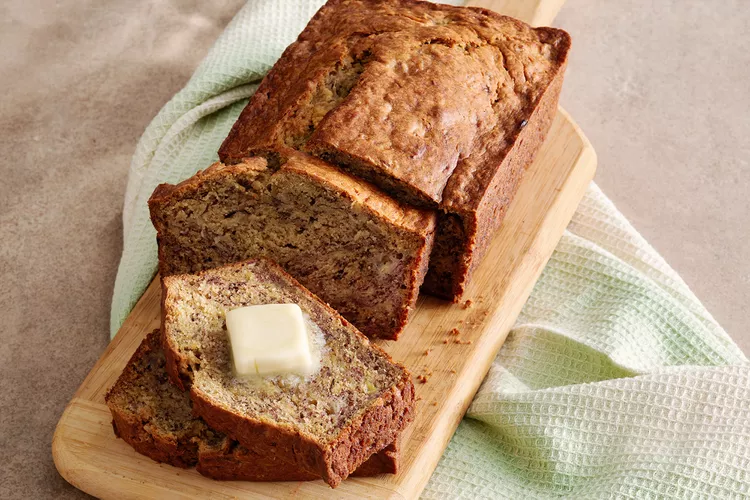

Banana Bread

Description
Banana bread is a type of sweet bread made from mashed bananas. It is often a moist and sweet quick bread but some recipes are yeast raised.
Ingredients
- Flour: All-purpose flour gives the banana bread structure.
- Baking soda: Baking soda acts as a leavener, which means it helps the banana bread rise.
- Salt: A pinch of salt enhances the overall flavor, but it won't make the loaf taste salty.
- Butter: A stick of butter lends richness, moisture, and irresistible flavor.
- Brown sugar: Brown sugar sweetens things up and adds a hint of warmth.
- Eggs: Eggs act as a binding agent, which means they hold the batter together.
- Bananas: Of course, you'll need bananas! Choose overripe bananas.
Steps
- Combine the dry ingredients in one bowl.
- Beat the butter and sugar in another bowl. Add the eggs and mashed bananas.
- Add the wet mixture to the dry mixture.
- Pour the batter into a loaf pan and bake in a preheated oven.